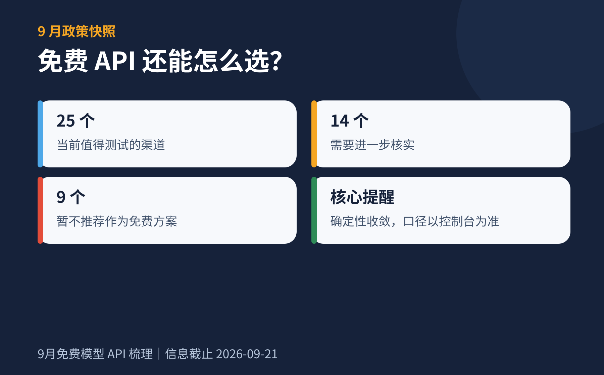

AMR
AI Model Radar
月刊
2026 年 9 月
价格横评
历史归档
2026.09.21
月刊目录 / 第 2 期
免费模型 API
27 可测试
11 需核实
10 暂不推荐
最新一期
已发布

2026 年 9 月
免费层
大事件
新渠道
27
可测试
11
需核实
10
暂不推荐
打开本期
↗
历史归档
月刊归档
共 2 期
01
2026 年 8 月
29 可测试 · 13 需核实 · 17 暂不推荐
已发布
→
02
2026 年 9 月
27 可测试 · 11 需核实 · 10 暂不推荐 · 新增 AI 大事件
已发布
→
03
2026 年 10 月
尚未发布
即将更新
—
数据快照 · 2026.09.21
优先采用官方来源
每月更新